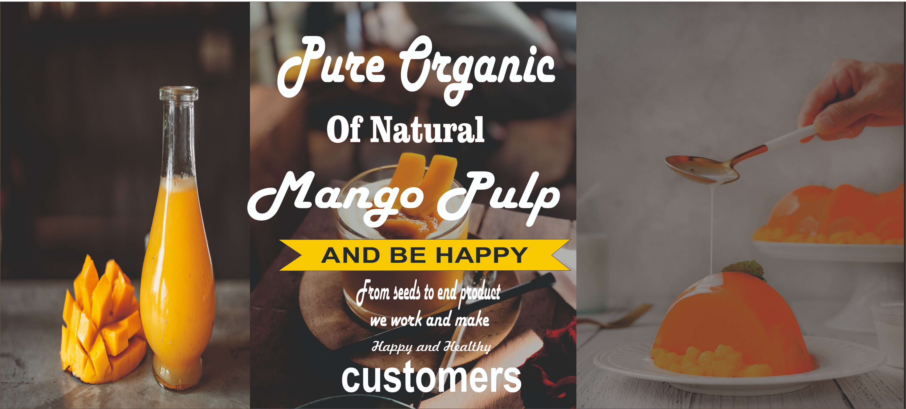

At Ajinkya Agrofarms, we hold a firm belief that the backbone of any nation is its agricultural sector - the diligent hands that tirelessly work to feed the populace, provide the raw materials for clothing, and contribute to the energy needs of an ever-expanding world. Our mission is to enhance the productivity of these hardworking farmers, enabling them to yield superior quality products, while simultaneously uplifting and empowering those who are at the forefront of production.
Our services extend beyond mere words. We offer comprehensive assistance in the form of valuable information, technical expertise, financial guidance, and strategic planning to help you establish enterprises in the agricultural sector that are not only sustainable but also profitable. Our goal is to create a synergy between economic growth and environmental sustainability.
We are well-equipped with resources such as cultivable lands that are ripe for agricultural activities. Our team of experts provides consultancy services and maintains liaisons with key industry players, ensuring you have the right connections to thrive in your venture. We leverage cutting-edge technology to stay ahead of the curve and have a wealth of experience navigating the unique business environment in India.
In essence, Ajinkya Agrofarms is more than just an agricultural firm. We are a partner in your journey towards creating a greener, more prosperous future. We stand with you, ready to usher in a new era of agricultural advancement. Let's sow the seeds of success together.

Providing the farm fresh, nutritious & chemical-free 100% organic vegetables to fit your healthy lifestyle.
Step into a realm of organic goodness with our premium range of organic pulses, where every legume embodies the essence of sustainability and purity.
Discover the purity of nature in every sip. Our cow milk is free from artificial additives, hormones, and preservatives.
A safely managed drinking water service should be easily accessible, available when needed and free from contamination.

We are leading manufacturer of Dehydrated Vegetable powders are the processor and supplier of pure & natural Vegetable Powders.

Quality is the heartbeat of our business. Our cashews undergo rigorous quality control measures, from sourcing to packaging.
Experience the true taste of mangoes as nature intended. Our organic mangoes are harvested at the peak of ripeness, delivering a burst of flavor with every juicy bite.
Our organic grains are cultivated with care, harnessing the richness of fertile soil and clean air. Each kernel is a testament to the natural bounty of the earth, free from synthetic pesticides and chemicals.
Nurture plants that are naturally resilient. Our fertilizers not only provide essential nutrients but also stimulate plant immunity, helping crops withstand environmental stressors and diseases.